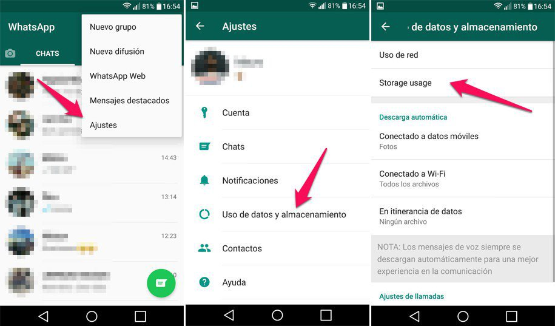
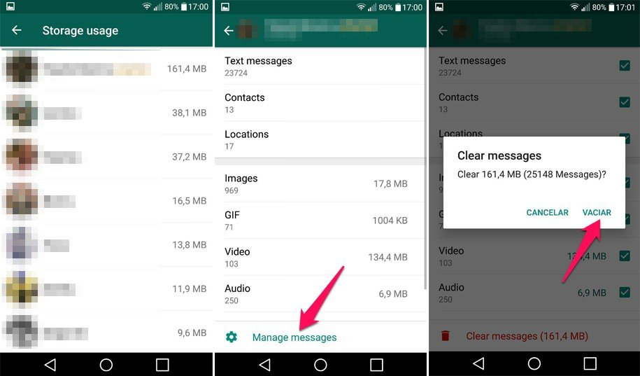

Independientemente de la marca de móvil que utilices, todos tenemos un problema en común: tarde o temprano nos
quedamos sin espacio. Todo lo que haces ocupa memoria: mensajes, fotos, videos, audios… Pero la última
actualización de la beta de WhatsApp viene al rescate para liberar espacio en nuestros teléfonos.
Cómo liberar espacio con WhatsApp para Android (versión beta 2.17.339)
Antes de nada, tendrás que acceder al programa de beta testers de WhatsApp para Android (puedes hacerlo aquí). Su última
actualización, te permite seleccionar un chat y eliminar todos sus mensajes, contactos, ubicaciones, imágenes, GIF,
documentos y videos de manera individual.
1. En Ajustes, vete a “Uso de datos y almacenamiento”

2. Selecciona el chat que quieres limpiar
Después de unos segundos, aparecerá la lista de contactos por orden de ocupación de espacio. Selecciona el chat en el
que quieres hacer limpieza y verás exactamente qué es lo que se almacena en el dispositivo (fotos, videos, etc.) y cuánto
espacio ocupa.

3. Borra los tipos de archivo que quieras
Si pulsas en “Manage messages” puede seleccionar y deseleccionar los tipos de archivos que quieras eliminar. Por ejemplo,
si quieres borrar sólo los videos, quita la marca de todo menos de videos (algo que en mi opinión, debería estar al revés
y poder seleccionar lo que quieres borrar). Una vez que hayas hecho esto, haz clic en “Clear messages” y acepta.
Ten en cuenta que una vez que hayas hecho esto, ya no podrás ver los archivos de tus conversaciones, ya que ya no estarán
en tu dispositivo. Esto es diferente a si los eliminas de la carpeta WhatsApp del teléfono, ya que si lo haces, podrás
descargarlos de nuevo.